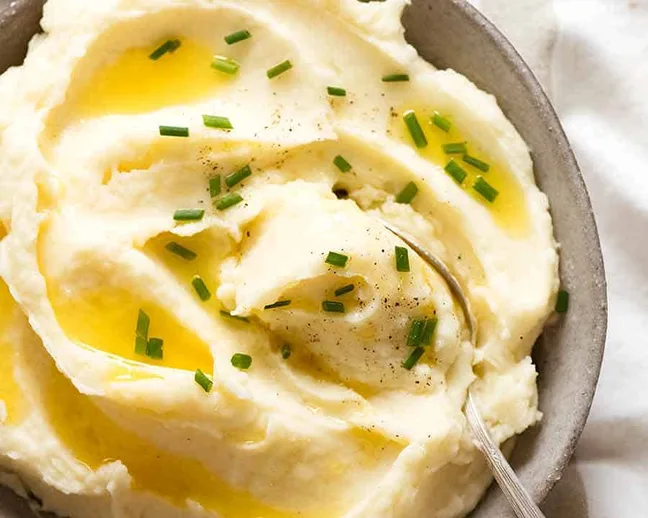

Home
Mash Potatoes

Description
This is the creamy mashed potato you've seen smothered in sauces and gravies. Easy, buttery, perfectly seasoned, and impossible to resist eating it straight out of the pot, homemade mashed potato was never so simple to make and totally mouthwatering!
Ingredients
- 3 lb potatoes, peeled and cut into 1 inch cubes
- 1 tbsp salt
Flavoring
- 4 tbsp unsalted butter
- 1/2 cup milk (preferably warmed)
- 1/2 tsp salt
Garnish
- Extra melted butter
- Chived or parsley (chopped)
Instructions
- Place in a large pot with 1 tbsp salt. Add water so it's 4 inch above potatoes.
- Bring to a boil over high heat then reduce heat so it's simmering rapidly. Cook 15 minutes or until potatoes are very soft (jab with fork to test, they should fall apart).
- Drain well, return into pot. Leave for 1 minute, shaking pot every now and then, to encourage evaporation of water.
- Add Flavourings then mash well, using milk to make it looser if desired.
- DO NOT use: a beater, stick blender, food processor or blender. You can pulse with a stand mixer or handheld mixer but be cautious, stop as soon as it's creamy (potatoes will quickly go from perfect to gluey using appliances).
- Transfer to serving bowl, make pretty swirls across the top and drizzle over butter. Sprinkle with chives then serve!
Credits
This dish was heavily inspired by the following recipe
recipetineats Creamy Mashed Potatoes Recipe